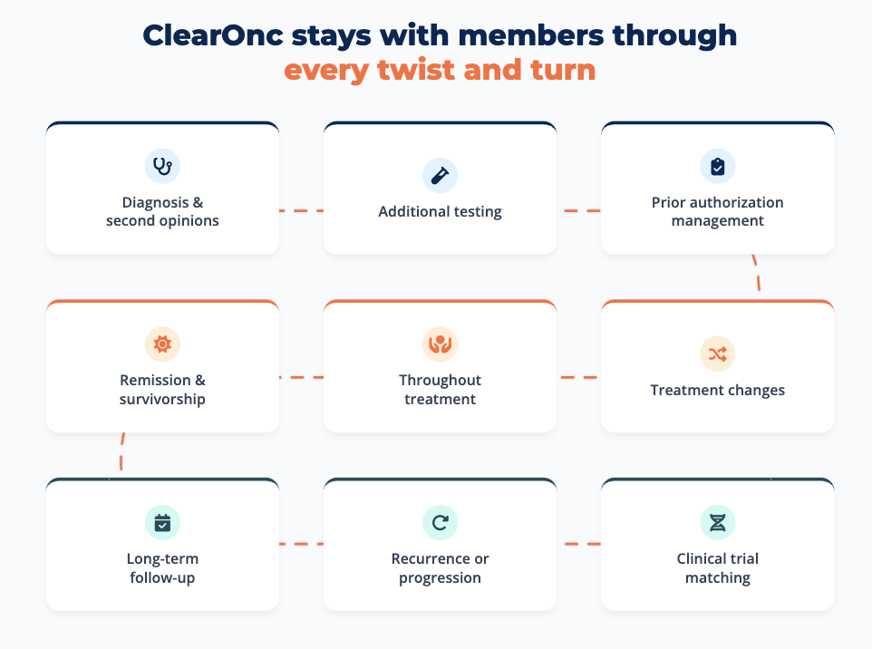
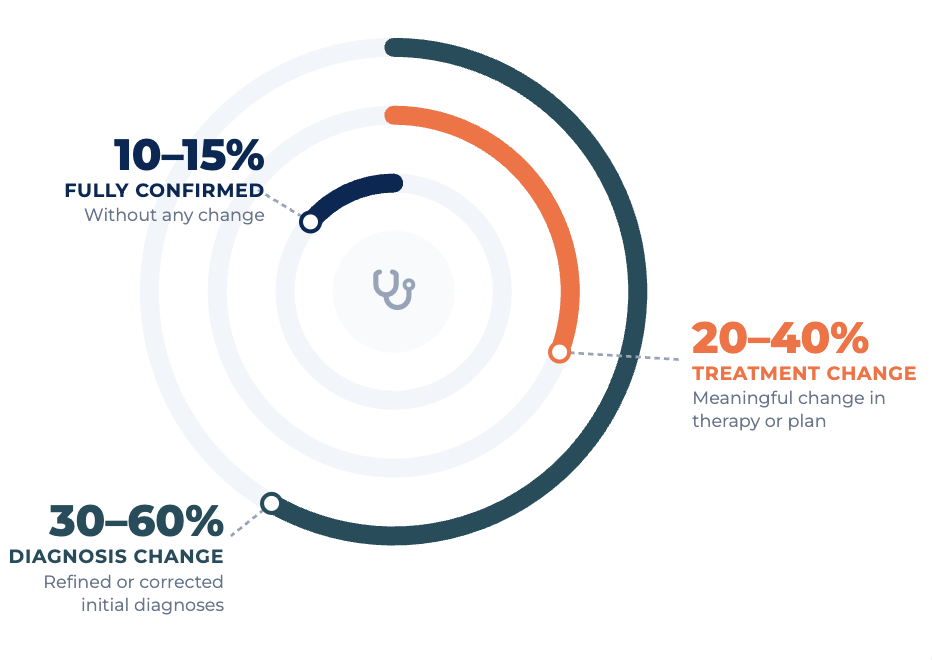

The moment someone hears, “You have cancer,” time feels different. Suddenly every decision matters, and every day feels urgent.
ClearOnc helps ensure from that moment forward, treatment decisions are guided by trusted oncology expertise, delivered quickly and accessible regardless of geography.
Cancer is expensive. Cancer is unpredictable. Cancer is unfair.
A diagnosis disrupts families, workplaces, and lives in an instant. Questions flood in. Decisions feel urgent, impossible, overwhelming, costly, and irreversible. Treatment plans are quickly set in motion that set the trajectory for the entire journey.
First decisions shape long-term prognosis
Treatment choices affect quality of life
Clarity builds trust in the care journey
Early accuracy reduces downstream spend
For organizations, these decisions show up as claims. But for patients, families, and teams, they shape everything that follows. ClearOnc exists to ensure early decisions are informed by the right expertise at the right time — not just at diagnosis, but throughout the entire journey.
Cancer is the highest-risk condition most organizations manage.
Cancer costs are volatile because oncology decisions are complex. Behind every high-cost case is a sequence of choices. Small changes in those decisions can swing costs by $10,000–$100,000 or more per case. Volatility is not random — it reflects decision uncertainty at moments when certainty matters most.
“Cancer doesn’t discriminate and changes lives in an instant. Confidence in a patient’s treatment should not take weeks or be dependent on where you live.”
Across peer-reviewed and institutional studies:
These insights can shift therapy choices, timing and intensity — directly impacting outcomes and long-term cost of care. Yet traditional second opinions often arrive weeks later, when treatment has already begun and the opportunity to adjust the plan is much harder.
Traditional oncology consult models are:
Answering one question once
Dependent on record chasing and administrative friction
Often requiring 4 to 6 weeks or longer
Patients anxiously put their lives on hold. Care managers chase documentation. Treatment plans move forward. By the time expertise arrives, the window to meaningfully change direction may have narrowed. ClearOnc changes when expertise shows up — and how long it stays.
Cancer is not a single event, but a series of inflection points. That’s why ClearOnc was built to be a care companion throughout each member’s journey.
From the moment of diagnosis, we help guide treatment decisions, revisit the plan when circumstances change, and remain a steady source of expertise through survivorship.

Making world-class oncology insight accessible anywhere — regardless of geography, regardless of where a member receives care.
Diagnoses clarified earlier. Unnecessary treatments avoided. Therapies sequenced correctly the first time. These decisions improve patient outcomes and significantly increase financial predictability for everyone involved.
Benchmarks show:

ClearOnc is designed to be used by:
Anytime things change in a member’s cancer journey, ClearOnc is there to reevaluate and provide confidence, strength, and speed in treatment decisions.
That’s why ClearOnc delivers the right expertise throughout the journey. Anywhere. Without the wait.